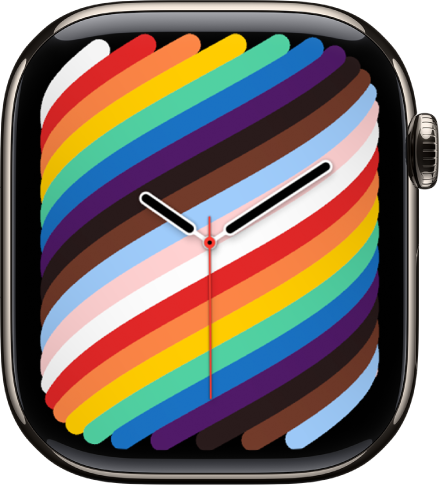

此表盘的灵感来自于彩虹旗。轻点表盘时彩色条会移动，旋转数码表冠时彩色条会发生变化。
下方的文件数包括本地化资源。固件名称键能确认包的归属；组件的圆屏点击边界、亮屏过渡与 AOD 对照均待设备验证。
原始包 已解析属性表 Mach-O 方法与成员 ARM64 汇编
.strings × 132 .png × 5 .metallib × 1 .plist × 1 .desc × 1 .g11m × 1 .g15p × 1 .g18m × 1 无扩展名 × 1
原始包 已解析属性表 Mach-O 方法与成员 ARM64 汇编
.strings × 132 .png × 5 .metallib × 1 .plist × 1 .desc × 1 .g11m × 1 .g15p × 1 .g18m × 1 无扩展名 × 1
原始包 已解析属性表 Mach-O 方法与成员 ARM64 汇编
.strings × 132 .png × 5 .metallib × 1 .plist × 1 .desc × 1 .g11m × 1 .g15p × 1 .g18m × 1 无扩展名 × 1
NTKPrideWeaveFaceBundle.bundle共用此包的条目有 彩虹指针、彩虹数字、彩虹编织。下方资源按包列出，具体款式需结合名称键和调用路径。
FACE_STYLE_PRIDE_WEAVE_DESCRIPTIONFACE_STYLE_PRIDE_ANALOG_DESCRIPTIONFACE_STYLE_PRIDE_DIGITAL_DESCRIPTIONEDIT_OPTION_LABEL_PRIDE_ANALOG_STYLE_DIALEDIT_OPTION_LABEL_PRIDE_ANALOG_STYLE_FULLSCREENEDIT_OPTION_LABEL_PRIDE_STYLE_BANDEDEDIT_OPTION_LABEL_PRIDE_STYLE_RIBBONEDIT_OPTION_LABEL_PRIDE_STYLE_FABRIC色组与设备条件 共享色组与默认值
-[NTKPrideWeaveBarberQuad tritiumProgress];-[NTKPrideWeaveBarberQuad setTritiumProgress:];-[NTKPrideWeaveFaceView tritium_didTransitionToTritiumOn];-[NTKPrideWeaveFaceView tritium_willBeginRenderingFlipbookContent];-[NTKPrideWeaveFaceView tritium_didTransitionToTritiumOff];-[NTKPrideWeaveFaceView tritium_createFaceAnimator];-[NTKPrideWeaveFaceView tritium_prepareForActiveStateBurnInStudyWithDisplayDate:];-[NTKPrideWeaveFaceView tritium_willTransitionToTritiumOnToFrameSpecifier:];-[NTKPrideWeaveFaceView tritium_willTransitionToTritiumOffFromFrameSpecifier:];-[NTKPrideWeaveSpiroQuad setTritiumProgress:];-[NTKPrideWeaveSpiroQuad setTritiumProgress:forLoop:];-[NTKPrideWeaveFaceView tritium_didTransitionToTritiumOn];-[NTKPrideWeaveFaceView tritium_didTransitionToTritiumOff];-[NTKPrideWeaveFaceView _applyTransitionFraction:fromOption:toOption:forCustomEditMode:slot:];-[NTKPrideWeaveFaceView tritium_createFaceAnimator];-[NTKPrideWeaveFaceView _cleanupAfterTransitionComplicationSlot:selectedComplication:];-[NTKPrideWeaveFaceView screenWillTurnOnAnimated:];-[NTKPrideWeaveFaceView _configureForTransitionFraction:fromEditMode:toEditMode:];-[NTKPrideWeaveFaceView tritium_willTransitionToTritiumOnToFrameSpecifier:];-[NTKPrideWeaveFaceView screenDidTurnOffAnimated:];-[NTKPrideWeaveFaceView tritium_willTransitionToTritiumOffFromFrameSpecifier:];+[NTKPrideWeaveFace _initialDefaultComplicationForSlot:forDevice:];+[NTKPrideWeaveFace complicationConfiguration];-[NTKPrideWeaveFace complicationSlotsHiddenByEditOption:];-[NTKPrideWeaveFace _numberOfOptionsForCustomEditMode:slot:];-[NTKPrideWeaveFace _defaultOptionForCustomEditMode:slot:];-[NTKPrideWeaveFace _indexOfOption:forCustomEditMode:slot:];-[NTKPrideWeaveFace _optionAtIndex:forCustomEditMode:slot:];+[NTKPrideWeaveFaceBundle complicationTypesBySlot];-[NTKPrideWeaveFaceView _innerComplicationColors];-[NTKPrideWeaveFaceView _outerComplicationColors];-[NTKPrideWeaveFaceView _complicationAlphaForEditMode:];-[NTKPrideWeaveFaceView cleanupAfterEditing];-[NTKPrideWeaveFaceView _applyTransitionFraction:fromOption:toOption:forCustomEditMode:slot:];-[NTKPrideWeaveFaceView layoutSubviews];-[NTKPrideWeaveFaceView _applyBreathingFraction:forCustomEditMode:slot:];-[NTKPrideWeaveFaceView prepareForEditing];-[NTKPrideWeaveFaceView _applyOption:forCustomEditMode:slot:];-[NTKPrideWeaveFaceView _hideTimeAndComplicationsInHomeScreen];-[NTKPrideWeaveFaceView _configureComplicationView:forSlot:];-[NTKPrideWeaveFaceView _cleanupAfterTransitionComplicationSlot:selectedComplication:];-[NTKPrideWeaveFaceView _loadLayoutRules];-[NTKPrideWeaveFaceView colorForView:accented:];-[NTKPrideWeaveFaceView _applyRubberBandingFraction:forCustomEditMode:slot:];-[NTKPrideWeaveFaceView setAnalogHandsColor];